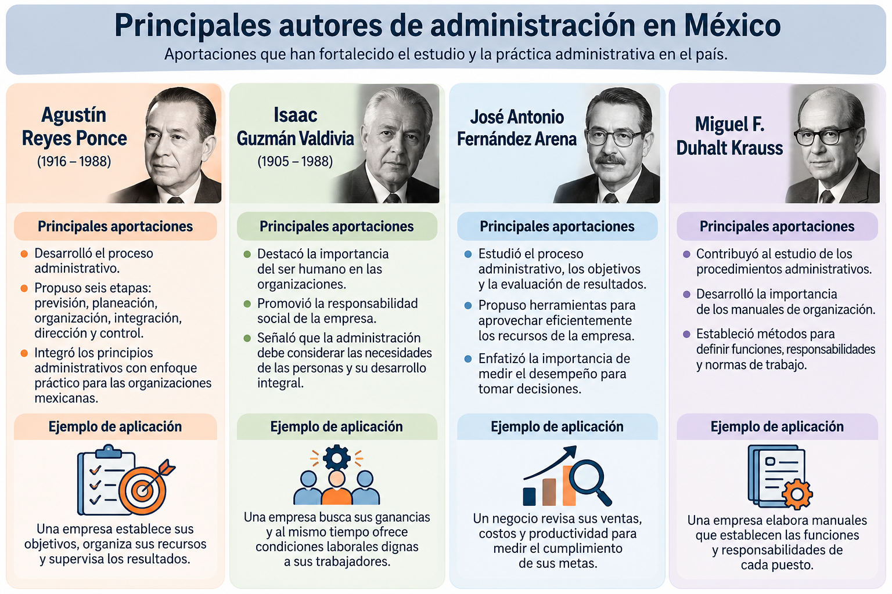
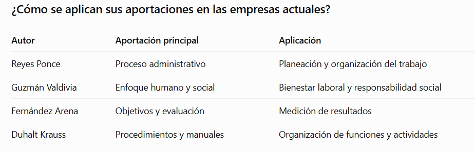
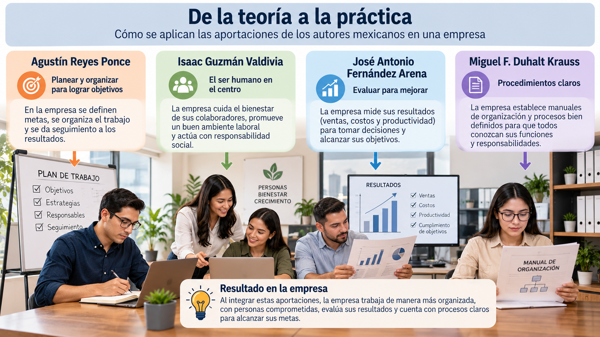

Unidad 4. La administración en México
Unidad 4. La administración en México
Introducción a la unidad
La administración en México ha evolucionado de acuerdo con las necesidades económicas, sociales y empresariales del país. Diversos autores mexicanos han contribuido al estudio de la administración, proponiendo ideas y herramientas para mejorar el funcionamiento de las organizaciones.
Actualmente, las empresas mexicanas enfrentan nuevos desafíos debido a la globalización, los avances tecnológicos y la competencia internacional. Al mismo tiempo, el espíritu emprendedor representa una oportunidad para crear negocios, generar empleos y contribuir al desarrollo económico.
En esta unidad conoceremos las aportaciones de autores mexicanos, la importancia de la administración en un entorno globalizado y los principios necesarios para emprender y administrar pequeñas empresas.
Objetivo de la unidad
Comprender la evolución y aplicación de la administración en México, identificando las aportaciones de sus principales autores, los desafíos de la globalización y la importancia del espíritu emprendedor en la creación y administración de pequeñas empresas.
¿Qué aprenderá el alumno?
¿Qué aprenderá el alumno?
4.1. Principales autores de administración en México
Identificará a los principales autores mexicanos y reconocerá sus aportaciones al pensamiento administrativo.
4.2. Dimensiones de la administración en un mundo globalizado
Comprenderá cómo influyen los factores económicos, tecnológicos, sociales y culturales en la administración de las empresas.
4.3. El espíritu emprendedor y la administración de pequeñas empresas
Reconocerá las características del emprendedor y la importancia de planear, organizar y administrar adecuadamente un pequeño negocio.
La administración en México combina las aportaciones de sus autores, la adaptación a un entorno globalizado y la capacidad emprendedora para fortalecer las organizaciones.
4.1. Principales autores de administración en México
4.1. Principales autores de administración en México
Introducción
En México, diversos especialistas han contribuido al desarrollo de la administración mediante investigaciones, libros y propuestas que ayudan a comprender cómo funcionan las organizaciones.
Sus aportaciones han permitido adaptar los principios administrativos a las características de las empresas mexicanas, considerando aspectos como la organización del trabajo, la planeación, el liderazgo y la administración de los recursos.
¿Por qué es importante conocer a los autores mexicanos?
Porque sus aportaciones permiten comprender que la administración no solamente se desarrolló en otros países. México también cuenta con especialistas que han contribuido a su enseñanza y aplicación en las empresas.


Ejemplo:
Imaginemos una pequeña empresa mexicana dedicada a la venta de alimentos.
Para mejorar su funcionamiento puede:
- Planear y organizar las actividades diarias, siguiendo las aportaciones de Reyes Ponce.
- Cuidar las condiciones laborales de sus empleados, considerando el enfoque de Guzmán Valdivia.
- Evaluar sus ventas y gastos, aplicando el enfoque de Fernández Arena.
- Establecer procedimientos escritos para compras, preparación y atención al cliente, como propone Duhalt Krauss.
De esta manera, las aportaciones de diferentes autores pueden complementarse dentro de una misma organización.
¿Por qué es importante que una empresa mexicana considere tanto sus resultados económicos como el bienestar de sus trabajadores?
Esta pregunta permite relacionar las aportaciones administrativas con situaciones reales.
Los autores mexicanos han contribuido al desarrollo de la administración mediante propuestas que fortalecen la planeación, la organización, la evaluación de resultados y el reconocimiento de las personas como parte fundamental de las empresas.

4.2. Dimensiones de la administración en un mundo globalizado
4.2. Dimensiones de la administración en un mundo globalizado
Introducción
Actualmente, las empresas no trabajan de manera aislada. La tecnología, el comercio internacional y la comunicación permiten que los productos, servicios e información circulen entre diferentes países.
A este fenómeno se le conoce como globalización.
Por esta razón, los administradores deben comprender los cambios que ocurren en el mundo y adaptar sus estrategias para que las empresas puedan competir y mantenerse en el mercado.
¿Qué significa administrar en un mundo globalizado?
Significa dirigir una organización considerando no solamente lo que sucede dentro de la empresa, sino también los factores externos que pueden influir en sus actividades.
Por ejemplo, una pequeña empresa mexicana puede comprar materiales de otro país, vender productos por internet y competir con marcas internacionales.
Principales dimensiones de la administración globalizada
1. Dimensión económica
Se relaciona con los mercados, los precios, la competencia y el comercio internacional.
Ejemplo: Una empresa mexicana modifica sus precios porque aumentó el costo de los materiales importados.
2. Dimensión tecnológica
Comprende el uso de herramientas digitales, automatización, sistemas de información y comercio electrónico.
Ejemplo: Una tienda comienza a vender sus productos mediante una página web.
3. Dimensión social y cultural
Considera las costumbres, valores, necesidades y formas de comunicación de las personas en diferentes lugares.
Ejemplo: Una empresa adapta sus productos a los gustos de los consumidores de otro país.
4. Dimensión política y legal
Incluye leyes, regulaciones, acuerdos comerciales y disposiciones que las empresas deben cumplir.
Ejemplo: Una empresa que exporta alimentos debe cumplir los requisitos sanitarios del país al que vende.
5. Dimensión ambiental
Se relaciona con el uso responsable de los recursos naturales y la reducción del impacto ambiental.
Ejemplo: Una fábrica implementa medidas para ahorrar agua y reducir residuos.
¿Qué desafíos enfrentan las empresas mexicanas?
Las organizaciones necesitan:
- Adaptarse a los avances tecnológicos.
- Competir con empresas nacionales e internacionales.
- Capacitar continuamente a sus trabajadores.
- Conocer las necesidades de diferentes consumidores.
- Cumplir las regulaciones aplicables y actuar responsablemente.
Ejemplo:
Una pequeña empresa mexicana que fabrica muebles decide vender por internet a clientes de otros países.
Para lograrlo, debe analizar los costos de envío (económica), utilizar plataformas digitales (tecnológica), conocer los gustos de sus compradores (sociocultural), cumplir las normas de exportación (política y legal) y utilizar materiales de manera responsable (ambiental).
Este ejemplo demuestra que las dimensiones de la globalización están relacionadas y pueden influir en una misma decisión administrativa.
¿Qué dificultades podría enfrentar un pequeño negocio mexicano si decide vender sus productos en otros países?
La globalización ofrece oportunidades de crecimiento, pero también exige que las empresas se adapten a los cambios económicos, tecnológicos, sociales, legales y ambientales.
4.3. El espíritu emprendedor y la administración de pequeñas empresas
4.3. El espíritu emprendedor y la administración de pequeñas empresas
Introducción
El emprendimiento es una actividad importante para el desarrollo económico de México, ya que permite crear negocios, generar empleos y ofrecer productos o servicios que satisfacen las necesidades de la sociedad.
Sin embargo, tener una buena idea de negocio no garantiza el éxito. Para que una empresa funcione adecuadamente, es necesario aplicar los principios de la administración.
¿Qué es el espíritu emprendedor?
Es la actitud y capacidad de una persona para identificar oportunidades, desarrollar ideas y convertirlas en proyectos o negocios, asumiendo riesgos de manera responsable.
Ejemplo: Una persona identifica que en su comunidad existe una necesidad de servicios de impresión y decide establecer un pequeño negocio para atenderla.
Características de una persona emprendedora
- Iniciativa: busca oportunidades y propone soluciones.
- Creatividad: desarrolla ideas nuevas o mejora las existentes.
- Responsabilidad: cumple compromisos y administra sus recursos.
- Perseverancia: enfrenta dificultades y busca alternativas.
- Capacidad de decisión: analiza opciones y asume riesgos calculados.
- Adaptabilidad: responde a los cambios del mercado.
¿Qué es una pequeña empresa?
Es una organización que desarrolla actividades económicas con una estructura y una cantidad de trabajadores relativamente reducidas.
En México, la clasificación oficial de las empresas por tamaño considera el sector económico, el número de trabajadores y las ventas anuales.
Las pequeñas empresas pueden dedicarse al comercio, los servicios o la producción de bienes.
La importancia de la administración en una pequeña empresa
Una pequeña empresa necesita administrar correctamente sus recursos para mantenerse en funcionamiento y crecer.
1. Planeación
Definir qué se quiere lograr, cuánto dinero se necesita y qué actividades se realizarán.
2. Organización
Distribuir las actividades, asignar responsabilidades y utilizar adecuadamente los recursos.
3. Dirección
Coordinar el trabajo, tomar decisiones y motivar a las personas que participan en el negocio.
4. Control
Revisar los ingresos, gastos, ventas e inventarios para identificar problemas y realizar mejoras.
Ejemplo práctico: una pequeña cafetería
Imaginemos que una persona decide abrir una cafetería cerca de una universidad.
Antes de iniciar debe analizar las necesidades de sus posibles clientes, calcular su inversión, seleccionar proveedores y establecer precios.
Una vez que comienza a operar, necesita organizar las compras, atender a los clientes, controlar los gastos y evaluar sus ventas.
Si detecta que un producto no se vende, puede modificar su oferta o mejorar su estrategia comercial.
Este ejemplo demuestra que emprender significa crear una oportunidad, mientras que administrar permite organizarla y mantenerla en funcionamiento.
Principales desafíos de las pequeñas empresas
Entre los problemas más frecuentes se encuentran la falta de planeación, el control insuficiente de los gastos, la competencia, las dificultades para conseguir financiamiento y la necesidad de atraer y conservar clientes.
Una administración adecuada ayuda a anticipar estos problemas y tomar mejores decisiones.
Si tuvieras la oportunidad de iniciar un pequeño negocio, ¿qué tipo de empresa crearías y cuáles serían las tres primeras decisiones administrativas que tomarías?
El espíritu emprendedor permite transformar ideas en oportunidades de negocio, mientras que la administración proporciona las herramientas necesarias para organizar los recursos, tomar decisiones y favorecer la permanencia y el crecimiento de una empresa.